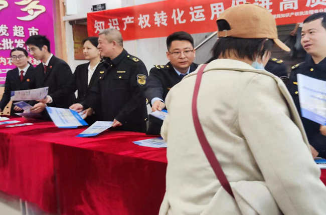

知识产权保护工作关系国家治理体系和治理能力现代化，关系高质量发展，关系人民生活幸福，关系国家对外开放大局，关系国家安全。
知识产权转化运用,促进高质量发展。

什么是知识产权？如何申请知识产权保护？

知识产权，是基于创造成果和工商标记依法产生的权利的统称。最主要的三种知识产权是著作权、专利权和商标权，其中专利权与商标权也被统称为工业产权。由于知识产权涉及面较广，不同种类之间所需提交的资料也不同。
1. 申请发明专利应当提交以下文件：《发明专利请求书》《说明书摘要》《权利要求书》《说明书》，必要时还应当提交《说明书附图》；
2. 申请实用新型专利应当提交以下文件：《实用新型专利请求书》《说明书摘要》《权利要求书》《说明书》《说明书附图》；
3. 申请外观设计专利应当提交以下文件：《外观设计专利请求书》《外观设计图片或照片》《外观设计简要说明》。要求国内优先权的，申请人在请求书中写明了在先申请的申请日和申请号的，视为提交了在先申请文件副本。要求外国优先权的，申请人必要时需提交在先申请文件副本等材料。
如何应用知识产权相关内容维护自身合法权益呢？
1.立法保护，国家赋予民事主体对其知识财产和相关精神利益的知识产权，并赋予法律拘束力，确保权益得到法律保障。
2.行政保护，国家行政机关对违反知识产权法律的行为进行行政处罚，并对某些知识产权进行授权等行政行为。
3.司法保护，通过司法途径为知识产权提供强有力的保护。
4.知识产权集体管理组织保护，较弱小的知识产权人可以通过形成某种组织，由该组织代为处理知识产权保护相关事宜，以维护自身利益。
5.知识产权人或其他利害关系人也可以通过自我救济的方式，设立专门从事知识产权法律或管理事务的部门，制定知识产权战略，并确定如何保护知识产权和避免对他人侵权的具体措施与手段。
6.舆论导向保护，通过正确合理的知识产权保护舆论引导，可以营造良好的知识产权保护氛围，增强公众对知识产权重要性的认识，从而推动知识产权保护的深入发展。
如何保护知识产权，让知识产权为振兴发展赋能？
各地对知识产权的保护措施，让我们得以窥见知识产权对振兴发展的积极作用。
开展联合执法
为营商环境塑造知产氛围
4月23日，长春市市场监督管理局联合长春知识产权法庭、长春市文化市场综合行政执法支队，在朝阳区7.8购物广场、净月区奥莱购物广场、宽城区光复路远东购物广场同步进行知识产权联合执法。 此次联合执法旨在有效整合各执法部门的执法资源，持续保持对侵犯知识产权违法行为的高压严打态势，提升知识产权保护工作效果，共同维护权利人合法权益和良好的营商环境。
成果转化路演
加速项目产业化应用
温室气体探测仪、医用高清3D内窥镜、硅基Micro-LED显示芯片技术和基于先进光学成像技术的AI检测系统等四大前沿项目一一登台亮相，从功能特性、应用场景、竞争优势到成果转化前景等各个方面进行了精彩纷呈地展示，不仅展现了光电信息产业领域的最新技术成果，更凸显出巨大的市场潜力，吸引了众多业界目光。
制定相关法案
深化法律支持与权益保护
2023年11月，东城区成功入选中宣部评选的全国民间文艺版权保护与促进试点地区，为北京市唯一入选的地区。 为此，东城区委宣传部联合区有关部门制定《东城区民间文艺版权保护与促进试点建设实施方案》，共推出“资源整合与机制保障”“法律支持与权益保护”“产业发展与价值转化”“行业培育与宣传推广”，旨在实现构建民间文艺版权保护服务保障新机制、构建民间文艺版权保护专业培养新模式、构建民间文艺产业良性发展促进新体系、构建民间文艺版权保护宣传推广新品牌的目标。 与此同时，积极借助外脑外力，联合光明日报、在京高校等智库资源，启动“东城区民间文艺版权保护与促进调研行”，围绕全区民间文艺资源现状、版权保护与价值转化面临的难点困境及相应解决举措等，开展专题调研，为试点建设提供专业性理论和实践支撑。
多方合作共赢
让知识产权充分进入资本市场
绍兴新昌县在浙江省首创知识产权金融服务“联合体”，全县实现知识产权质押融资超60亿元，完成专利保险100多件； 绍兴上虞区聚焦专利产业化，着力打通专利转化运用的关键堵点，使不少企业提升了核心竞争力，如浙江某特种材料有限公司的一个产学研专利项目，让公司的核心产品实现了进口替代，年新增销售额超11亿元；绍兴诸暨以“银行+保险+担保”的融资模式，实现知识产权质押登记线上办理，累计办理质押融资800余笔，融资规模超260亿元，居全省前列. 绍兴市仍将逐步构建起完善的知识产权大保护格局，继续在高价值创造、高水平保护、高品质服务、高效能管理上下功夫，推动国家知识产权强市建设。
保护知识产权就是保护创新
创新是引领发展的第一动力，保护知识产权就是保护创新。党的十九届五中全会《建议》对加强知识产权保护工作提出明确要求。当前，我国正在从知识产权引进大国向知识产权创造大国转变，知识产权工作正在从追求数量向提高质量转变。 我们要认清我国知识产权保护工作的形势和任务，总结成绩，查找不足，提高对知识产权保护工作重要性的认识，从加强知识产权保护工作方面，为贯彻新发展理念、构建新发展格局、推动高质量发展提供有力保障。
习近平强调，我国知识产权保护工作，新中国成立后不久就开始了。党的十八大以来，党中央把知识产权保护工作摆在更加突出的位置，部署推动了一系列改革，出台了一系列重大政策、行动、规划，实行严格的知识产权保护制度，坚决依法惩处侵犯合法权益特别是侵犯知识产权行为。 总的看，我国知识产权事业不断发展，走出了一条中国特色知识产权发展之路，知识产权保护工作取得了历史性成就，全社会尊重和保护知识产权意识明显提升。
习近平指出，要强化知识产权全链条保护。要综合运用法律、行政、经济、技术、社会治理等多种手段，从审查授权、行政执法、司法保护、仲裁调解、行业自律、公民诚信等环节完善保护体系，加强协同配合，构建大保护工作格局。要打通知识产权创造、运用、保护、管理、服务全链条，健全知识产权综合管理体制，增强系统保护能力。 要统筹做好知识产权保护、反垄断、公平竞争审查等工作，促进创新要素自主有序流动、高效配置。要形成便民利民的知识产权公共服务体系，让创新成果更好惠及人民。要加强知识产权信息化、智能化基础设施建设，推动知识产权保护线上线下融合发展。 要鼓励建立知识产权保护自律机制，推动诚信体系建设。要加强知识产权保护宣传教育，增强全社会尊重和保护知识产权的意识
要加强涉及财产权保护、人格权保护、知识产权保护、生态环境保护等重点领域的民事审判工作和监督指导工作，及时回应社会关切。 ——总书记在十九届中央政治局第二十次集体学习时的讲话
如何引导中国知识产权发展
创新发展的“刚需”
“当前，全球新一轮科技革命蓄势待发，以新技术突破为基础的产业变革不断加速，知识产权作为国家发展战略资源和国际竞争力核心要素的作用更加突出。 知识经济时代实质上就是知识产权经济时代。”——厦门大学经济学院教授余长林
保护知识产权与推动创新发展之间具有非常密切的关系。中国社会科学院法学研究所研究员李顺德认为，知识产权法律制度本身就是一个促进创新的制度，从创设之初，它的一个很重要的宗旨就是推动创新。 无论是可持续发展战略，还是知识产权战略，都体现了要充分利用知识产权去保护创新、激励创新的宗旨。
保护知识产权 推动创新发展
知识产权转化运用,促进高质量发展
国家知识产权局将坚持以习近平新时代中国特色社会主义思想为指导，认真落实党中央、国务院决策部署，充分发挥知识产权制度供给和技术供给的双重作用，为高质量发展提供更加有力的支撑。 一是加强知识产权法治保障，有力支持全面创新；二是加快知识产权转化运用，赋能经济创新发展；三是加大知识产权保护力度，持续优化营商环境；四是深化知识产权国际合作交流，助力高水平对外开放。
全面贯彻落实党的二十大和二十届二中全会精神，学习贯彻习近平文化思想，加快发展版权领域新质生产力。进一步加强顶层设计，提高版权工作法治化水平；进一步提升服务效能，推动版权产业高质量发展；进一步加强版权监管，构建良好创新生态和营商环境；进一步深化国际合作，向世界讲好中国版权故事。
宣传重点
（一）宣传学习贯彻习近平新时代中国特色社会主义思想。重点宣传各地区各部门在巩固拓展主题教育成果，坚决贯彻落实习近平总书记关于知识产权工作的重要指示论述，贯彻落实党中央、国务院关于知识产权工作的重大决策部署等方面取得的重要进展，不断开创知识产权领域宣传思想文化工作新局面，为加快推进知识产权事业高质量发展和知识产权强国建设凝心聚力。
（二）宣传新中国成立75周年我国知识产权事业发展成就。重点围绕党的十八大以来，我国知识产权事业发展壮大取得的突破性进展，通过学习体验、主题宣讲、公益科普、案例解读、网上宣传、群众性文化活动等形式多样、内容丰富的主题活动，激发爱国之情、砥砺强国之志、实践爱国之行，营造庆祝新中国成立75周年的浓厚社会氛围。
（三）宣传知识产权领域深入贯彻落实党中央对知识产权工作总体部署取得的成绩。围绕知识产权创造、运用、保护、管理、服务和国际合作等各方面工作，及时做好政策解读和宣传报道，集中宣传知识产权法律法规体系不断完善、《纲要》和《规划》一体推进落实、知识产权领域机构改革不断深化、专利转化运用专项行动深入实施、国家知识产权保护示范区建设高质量推进、知识产权公共服务效能更加优化、知识产权国际合作水平全面提高等重点工作进展成效。
（四）宣传知识产权制度在服务国家发展大局中的重要作用。紧紧围绕知识产权支持全面创新、促进产业转型升级、服务优化营商环境、助力畅通国内国际双循环的积极作用，坚持贴近生活、服务大众的宣传主旨，以“专精特新”、“国货潮牌”、文化精品、地标名品、数字经济等人民群众关注和熟知的知识产权元素为载体，展现知识产权制度在发展新质生产力、增强品牌竞争力、提升文化软实力、激活区域新动力、增添经济新活力等方面的重要作用。
（五）宣传知识产权法律法规、司法解释和基本知识。围绕加强知识产权保护，加大知识产权法律法规、司法解释和基本知识的普法宣传力度，挖掘典型案例、创新传播方式，生动展现知识产权强国建设的新进展新成效，对内对外讲好中国知识产权故事，增强全社会尊重和保护知识产权的意识，大力营造“尊重知识、崇尚创新、诚信守法、公平竞争”的知识产权文化氛围。
资料来源
http://www.people.com.cn/
https://www.gov.cn/zhengce/zhengceku/202403/content_6941614.htm
https://www.cta.org.cn/ywdt/202404/t20240424_54064.html
https://theory.jschina.com.cn/yaowen/202012/t20201202_6895772.shtml
https://www.cnipa.gov.cn/
http://jl.people.com.cn/n2/2024/0423/c349771-40820804.html